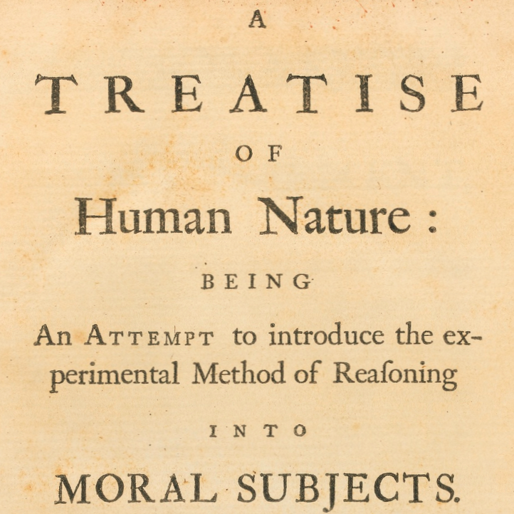

Hume on moral psychology
Fri., Apr. 19
In this class, we begin discussing Hume’s account of human moral psychology in his Treatise of Human Nature. Hume argues that reason is
(strictly speaking) motivationally inert, playing only the secondary role of providing information to what actually motivates us, the passions: hence “Reason is, and ought only to be the slave of the passions”. In addition, the passions cannot be in agreement with or in conflict with reason,
since a passion (unlike a judgment) makes no reference to the facts that could render the passion true or false: hence “’Tis not contrary to reason to prefer the destruction of the whole world to the scratching of my finger.” Because reason deals with factual information, and the passions
deal with motivation, there is no real conflict between reason and the passions. What’s really going in a case of motivational conflict is that calm
passions are vying against violent passions, with reason doing nothing more than providing information.
Key Concepts: Reason, The Passions, Moral Evaluation, Moral Rationalism, Moral Sentimentalism
Readings:
required
required
Powerpoint Slides:
N/A yet
Other Resources:
Early Modern Texts
Stanford Encyclopedia of Philosophy
Internet Encyclopedia of Philosophy